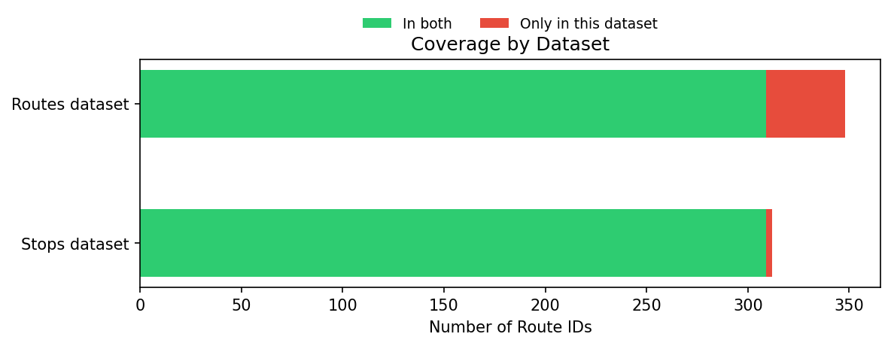
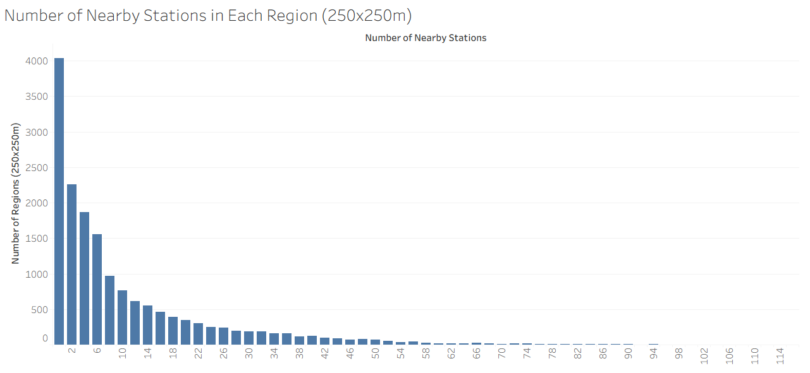
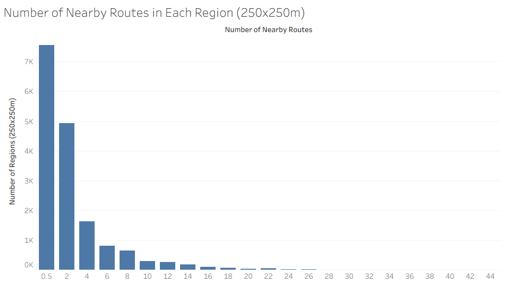
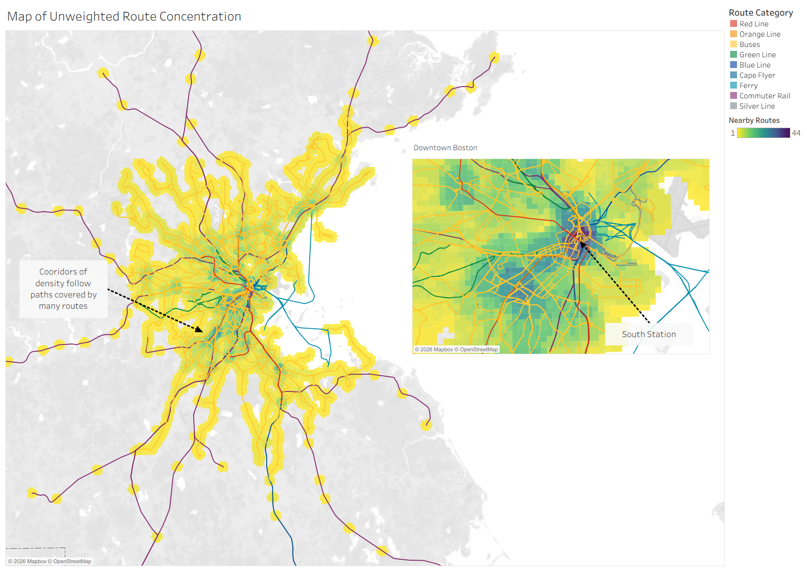
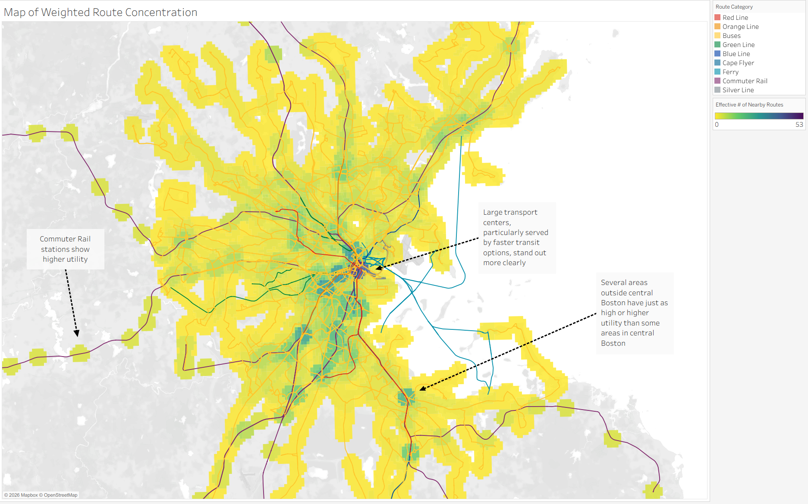
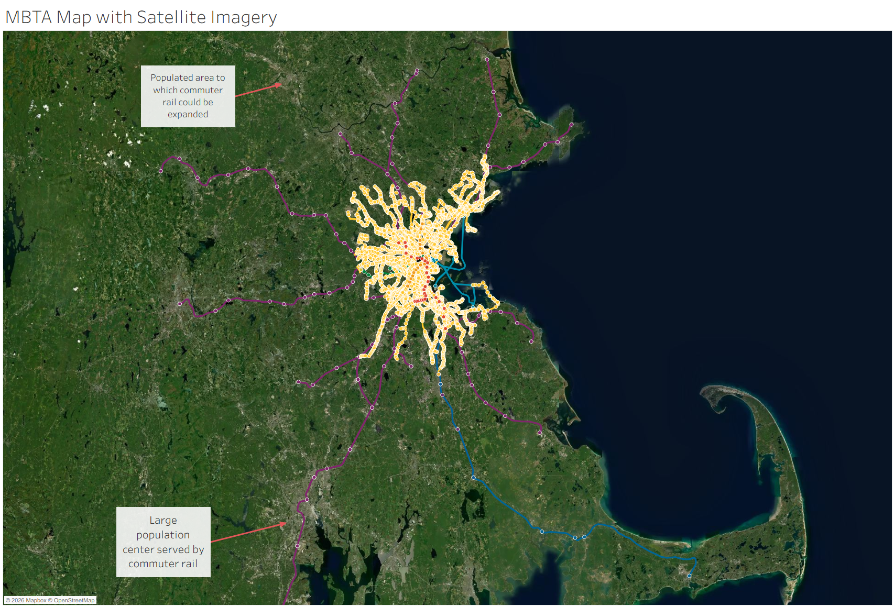

Subtheme: Transit-Oriented Development
Overall Analysis Questions
-
How much land would actually be available for TOD development?
- According to the MBTA Communities Act, rezoning and by extension TOD development should happen within "0.5 miles of a commuter rail stations, subway station, ferry terminal or bus station."
- Which areas would be most ideal for TOD development?
- I grew up having two bus lines within miles of my house, which made for some inconvenient transfers and roundabout routes. If there were multiple stops within 0.5 miles of me, I would've had so many more options.
- There are lots of areas in Boston (such as on MIT's campus, much to my chagrin) that are not a reasonable distance from a subway station, but are a reasonable distance from bus stations, which are slower and less useful. Perhaps subway stations should be weighted more heavily than bus stations.
- Could look at stop density across geography.
- Which populated areas are still underserved by transit?
- The MBTA Communities Act indicates that almost all of Massachusetts' eastern districts are served by the MBTA, but the commuter rail system becomes much less dense in the outer districts. Surely there are some gaps?
- Building commuter rail is expensive and time-consuming, and it's very likely that new population centers have developed that could use transit access.
- Perhaps, though, these new population centers are generally developed around existing transit stations.
Data Processing Steps
Exploring the entries within MBTA stops dataset, we observe that each stop entry contains a limited number of columns--the primary of which include stop_name, stop_id, routes, and geometry. The "routes" column also contains a JSON object with multiple routes for many of the stops. This makes sense, as many stops serve as hubs for multiple bus routes or rapid transit lines. However, Tableau is unable to parse these JSON objects, so we use Python to pre-process the dataset. For each stop with multiple routes, we duplicate the stop and expand the route information (route_id, route_color, route_long_name, etc.) into their own columns. In order to answer some of our overall questions, it is useful to use the buffered stop datasets to analyze the TOD-friendly area around each stop. However, having the exact coordinates of each stop could also be useful. Moreover, the MBTA lines dataset could also be useful for data validation, to confirm that the routes approximately match our background knowledge of the MBTA. Therefore, we join all three datasets (stops, buffered stops, and lines) using the route_id and stop_id in Tableau, allowing us to access data across the different datasets.
Discoveries & Insights







Summary
By visualizing the MBTA system's stops and lines, we can see that Boston is home to one of the more robust transit systems in the country, and it serves a large portion of Massachusetts, even outside the central Boston Area. However, access to transit is not uniformly distributed, and certain areas are much more suited to TOD development than others. Several regions even near to Boston are completely underserved, while several regions far from Boston are very well-served and could be great candidates for TOD development.
The biggest lesson that I learned from completing this report is that datasets often need to be combined in order to answer interesting questions about correlation between variables. There were so many other questions that I would've liked to explore, but they all required additional datasets--demographic data, property values, etc.--that would have had to be processed and cross-matched to fit with the existing datasets. From a mechanical perspective, I also learned that Tableau is great for visualizing things very quickly, but Python is great for more complex data processing and analysis.